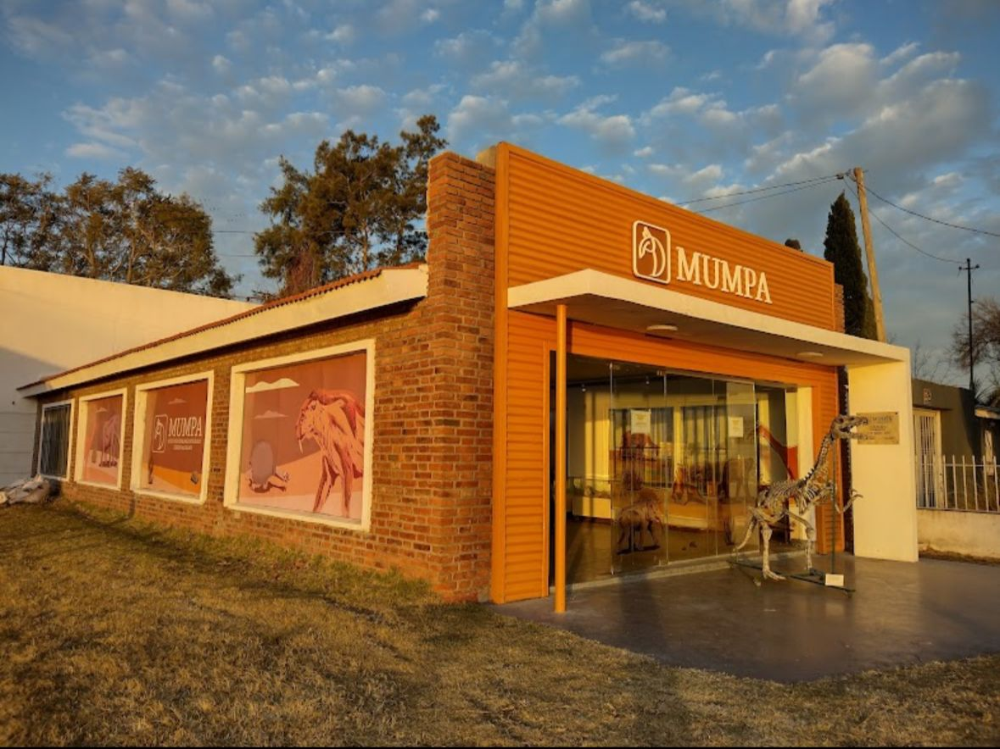
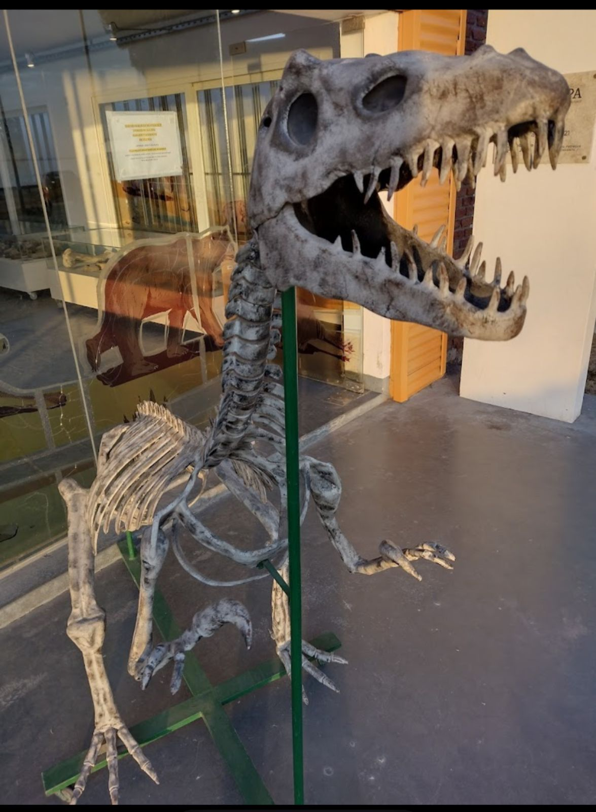

Inaugurado en agosto de 2021, está ubicado a metros del sitio donde se hallaron cientos de restos fósiles de animales prehistóricos que habitaron el lugar hace más de 10 mil años, a la vera del río Salado. Cuenta con una sala de exposición en la que se exhiben los restos fósiles y un sector de trabajo en el que se prepara dicho material para exposición, estudio y/o almacenamiento, que a su vez es visible para los visitantes.

------
----
-----

Su objetivo es acercar la ciencia a la comunidad mediante actividades educativas, investigaciones y exposiciones que permiten conocer la historia natural de Junín y sus alrededores. El museo integra el patrimonio fósil con la identidad cultural de la región, promoviendo la conservación y el turismo sustentable.